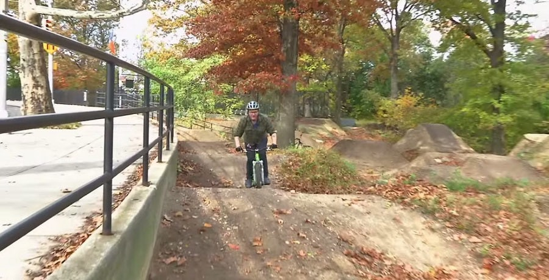

- Bike Type: Mountain
- Difficulty: 25% Noob, 25% Experienced, 50% Veteran
- Length: 3 miles
- Location: Washington Heights, Manhattan, NY
- Description: Highbridge confounds expectations. With everything from smooth cruisers to wickedly technical "east coast gnar," the trails provide a small but entertaining subsample of the best of the regions trails, all within the confines of the densest metropolitan area in North America. Highbridge Park itself straddles the rocky cliff band above Harlem River Drive between 155th Street and Dyckman Street, and the trails use this rocky, cliff-strewn terrain to their advantage routing beginner riders through the shadow of hulking rock cliffs, and taking expert riders up, down and across the steep and challenging cliffside. In addition to the XC trails, Highbridge also features the Hellfighter freeride trail, with terrain that includes drops, berms, steeps, rock gardens and other challenging features built to test your skills.(designed and built in conjunction with pro rider Jim Dellavalle and the Brooklyn Bike Riders). But the most-used feature of Highbridge Park is the dirt jump park, designed and built by IMBA Trailsolutions with current and former pro riders Judd DeVall, Jeff Lenosky and Kyle Ebbett. The Highbridge jumps begin with a pump track and a flow-line with beginner level jumps. The progressive intermediate section develops into a mini slopestyle inspired course with multiple tables, step up/downs and berms. While the XC trails are a bit short to ride as a destination, they're perfect for city residents looking for a local spin and riders out to sample a bit of everything- jumps, drops and trail riding all in one place, just blocks from the #1 train.

❮
❯